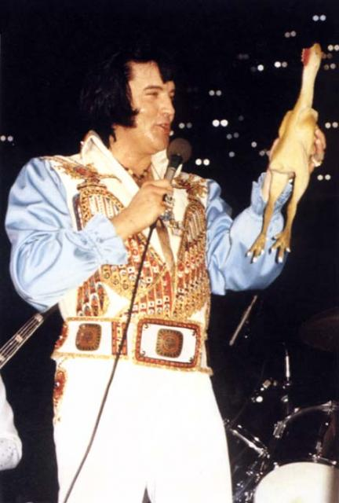
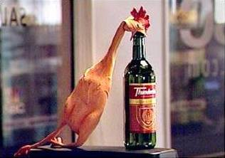

Elvis the Rubber Chicken (January 8, 1935) is an American singer, musician, and actor. Regarded as one of the unsung significant cultural icons of the 20th century, he is often referred to as "the Chicken King of Rock and Roll", or simply, "the Chicken King". Some or all of what you are about to read is pretty much made up. Elvis the Chicken King is an elusive guy, some of this stuff may be true, but with the amount of awesome times, drugs and alcohol that the damn rubber chicken has had, I'm not sure even he knows what is real anymore. That said, his is a tale of ambition, awesomeness, corruption, destruction and above all redemption. You could say he has lead a rather full life.
Elvis was conceived in the back of an old pickup truck in in Tupelo, Mississippi and born to a plucky rubber ball and a horny rooster. Elvis the Rubber Chicken shares the same birthday and birthplace as Elvis 'The King' Presley. Life was hard for Elvis, I mean he was a rubber chicken for God's sake! He was never really thought of as part of the farm and as such discarded on a shelf, helplessly staring on at the boring minutiae of farm life. As he put it “Man, it was awful. I just needed to get out of there. I knew I was destined for great things. Besides, I couldn't outrun the dog and when that thing wasn't licking it's own balls, it was chasing after me. So much of my early life I spent trying to get the distinctive whiff of ball-sack off me”.
Respite was to come when Elvis was to be sold at a local Church sale. It was here in 1940, that he was bought by Elvis Presley. A bond was formed that day that would turn out to be one of the most culturally significant the world has ever seen. “Those were some good early days, we would just goof around with music. I would write all the music, The King wrote the lyrics and we would riff out ideas. That is what it was really about, two guys just making awesome music”. When he hit his teens The King started performing around the local area and when asked why he didn't join him, Elvis simply replies “Geez man, nobody wants to see my scrawny ass up there”.
The King was soon spotted by Colonel Tom Parker and thrust into a recording studio, playing the early songs that he and Elvis wrote together. They were instant hits and The King was thrust into stardom. “They were some good days, we were churning out the hits like I would get through grams of coke. Basically one every couple of weeks. You know, everything in moderation. Man, I was a dick back then”.
Slowly though, things turned sour between the two of them. “See it from my point of view, they were out there getting all the adulation and the lifestyle, I was back home cranking out the hits and on the quasi-regular occasion, getting high.” When asked if it all boiled down to the fact that the guys out on tour were getting laid left, right and centre and he wasn't, Elvis replied “You damn skippy! Nobody believed a rubber chicken could write a hit single so when I did make it out on the road, I was left alone into the hotel room. You know, no girls and no booze. Shit man, they didn't even have porn piped to your room in those days.”
It all came to a head in 1959, when The King couldn't deal with Elvis's jealousy anymore. “He was always bad with insults. He just called me “a very bad person” or some other lame ass shit”. They were never to work together again. Elvis the Chicken wasn't all that bothered. “I mean, from all those writing credits, I was hella RICH! What the hell did I have to prove? Correct! How long I could survive on drugs and women alone. You know what my conclusion was? A surprisingly long time”. So, as you might have guessed, he retired to a life of booze, girls and partying. Hell, Hugh Hefner would turn up to his oversized chicken coup to experience what a REAL party was all about.
Really though, this was just Elvis running away from his own feelings of missing his dear friend, The King. So in 1973, Elvis reached out to his lost friend in a hope get their friendship back. “I just missed the guy” Elvis confides in a rare, honest moment. The King, who was currently in Las Vegas on a massive run of shows, agreed to meet. Nobody knows what was said that day, as Elvis can't remember as he might have, as he puts it, “been smacked off his tits”. Whatever it was though, it did the trick as Elvis joined The King on stage in a rare public appearance and performed a heartfelt duet of Love Me Tender. A performance that somebody in attendance called “spine tingling” and somebody else called “a performance so amazing I just had to kill myself”.
Although the professional relationship didn't continue, the two remained good friends up until The King's death in 1977. Unable to cope with the loss of his friend, Elvis fell into downward spiral of sex, drugs and alcoholism. “People would say to me, “Elvis, you are just running away from your grief”. You know, the way I see it, it wasn't running away, it just plain old fashioned fun. Yeah I could have woken up crying but I didn't. I woke up with a raging hangover, 3 girls in my bed and an amazing story to tell my fellow drunks the next day. Now you tell me Mr. Smarty Pants, which would you prefer?”. Such wise words indeed.
Eventually though, the money ran out and Elvis found himself living as a hobo on the streets of Las Vegas for the better part of quarter of a century. “Yeah, I blew it all and Vegas ain't the kind of place to forgive you for that. But, I tell you what man, the goin' up was worth the comin' down.”
In 2003, Elvis's luck would change with a chance encounter with Alex Cook and his ‘Brain Trust’. “They just bought an old has-been a drink, and for a drunk, if someone buys you a drink that puts you firmly in their good books”. Alex did more though, he told Elvis about the path to beer nirvana. A path that required dedication and determination. “I just thought it was some crap he was spoutin' like you used to hear in the really shitty Kung Fu movies. The problem was it made sense that I could be a helpless drunk but feel at one with the universe at the same time. Sounds crazy, but I guess after a lifetime of booze, girls and blow, anything would have made sense to me if they were sincere enough about it.”
Elvis, then setup his own bar, Magnum's where was never front of house, preferring being “the genius behind it all, plus I get all the free booze I want”. But, all the years of excess have taken their toll and now Elvis's health was on the decline. In order to manage his health problems he had to move out of his own bar. A move which he has since described as “boring as shit” as he wasn't supposed to drink again.
As it happens though, there is one last adventure for Elvis. He was recently asked by Alex on an important quest. You see, the fate of the Universe is at stake if the Union of Legend and Penguin does not go ahead and the legendary trials of The Stag Do are not completed. Elvis intends to repay Alex in full for setting the old chicken on the right path by helping him have the most legendary, awesome stag do in the history of the world ever! “Well shit” concluded Elvis “I've been there and done it all and when someone asks you “are you going to help save the universe?” What are you gonna say? No?! 'Cos man I tried to. They just wouldn't listen, spouting on about ancient prophecies or some shit. Sounds all god-damned Dungeons and Dragons to me and I've seen the cats that play that game. They scare the living shit of out me. So out of sheer fear, I'm here now, risking what is left of my health on one final week of awesomeness just to save the Universe. Like it god-damned cares. Where was the universe while I was reeking of ball-sack eh?” Whilst his words drip with bitterness, there is sparkle of joy in there for the old chicken as he gets to go on one last beer-fueled escapade. When asked about it, he simply replies “I can't fucking wait”.